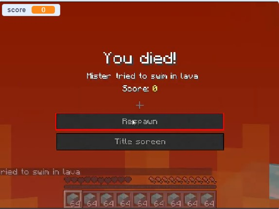
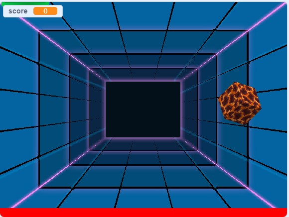
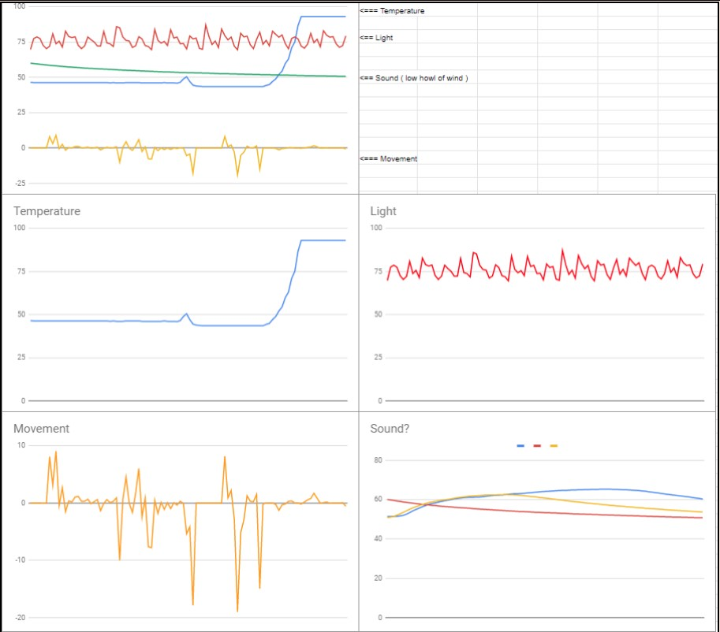

Home at Last
Portfolio
About Me
Welcome to my Portfolio page !
1.1.9 project
For my 1.2.5 project i was parterned up with josh. and we decided to make a maze game using turtle, the results were great, hoowever the walls sometimes dont detect.
1.3.6 project


for 1.3 project. We used scratch instead of replit. this time we decided to make a ball bouncing game; everytime the ball touches the wall it changes character. The goal is to keep the ball or in this case minecraft blocks out of the lava, and try to reach the highest score possible. With a variety of different costumes, different backgrounds, sounds, and more we had fullfilled 7 of the requirements for this project.
3.1.6 project

For the 3.1.6 project, we had been given a single stream full of data from 4 different sensors of a rover on an alien planet, we had been set with the task of finding out which region the data is from. Using our knowledge of the data and the graphs we had deducted that the rover was highly likely to be in the Rocky Mountains region. First and foremost, my partner and I had been given a description of each possible region that the rover could be in, using those descriptions we had created multiple graphs in order to indicate what we were looking for in the actual data of the rover. Next, we separated the single stream of values into different columns of data, in order to figure out which data goes to which sensor. Looking at the graphs, we had interpreted that the Blue graph was the temperature, implying a low temperature in the night / evening, with a sharp increase of temperature as the sun comes out during the day time. The Red graph was our light, meaning that there was a constant amount of light with clouds covering it ( which explains the sharp edges of the graph ). We had also thought that the yellow graph was the movement, implying a minor, yet constant, movement in the region. All of this together in our head made us believe that the rover was in the Rocky Mountains.